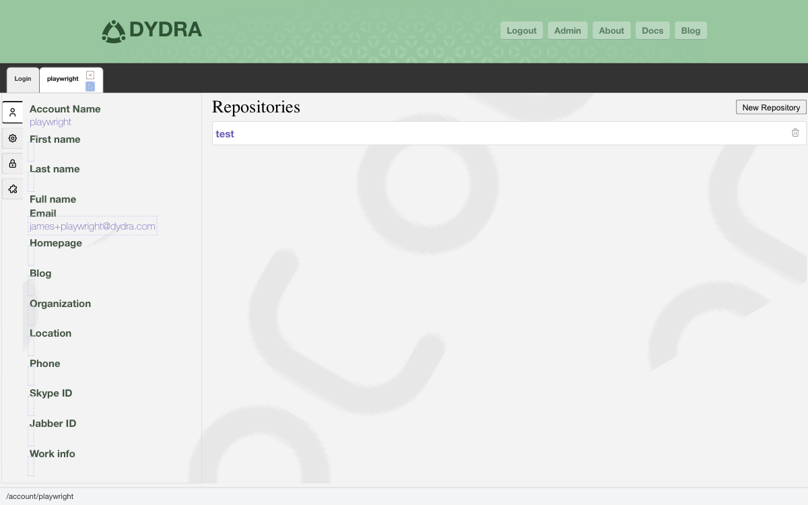

Dydra Studio · user manual · 02
Account Operations
This chapter tells you how to read your account information, edit your account metadata, and manage your authentication token.
Dydra Studio · user manual · 02
This chapter tells you how to read your account information, edit your account metadata, and manage your authentication token.
When you sign in, the application opens your account page. It shows:
Edit the profile fields to keep your account information current.
Edit any of these:
| Field | Description |
|---|---|
firstname |
Your first name |
familyname |
Your family/last name |
fullname |
Your full name |
email |
Your email address |
homepage |
URL to your personal homepage |
blog |
URL to your blog |
company |
Your company name |
location |
Your location |
phone |
Your phone number |
skype_id |
Your Skype ID |
jabber_id |
Your Jabber/XMPP ID |
workinfo |
Work-related information |
Step 1
Open your account page: click your account name in the navigation, or go to the account directly.

Figure 1: Account metadata field in edit mode with new value entered
Step 2
Find the field you want to edit in the account information section.
Step 3
Double-click the field value. The field turns into an input box.
Step 4
Type the new value, or change what is there.
Step 5
Press Enter, or click outside the field. The field goes back to displaying its value, now the one you typed.
Step 6
Click Save, in the tab bar, to write your changes to the server.

Figure 2: Account page showing the Save button in the tab bar
Note
the application tracks only the fields you touched. Save sends those fields, not the whole account configuration.
Important
nothing reaches the server until you click Save. Leave the page without saving and you lose your changes.
Your account page shows your authentication token. Use it to reach the Dydra API from a program.
To replace your token with a new one:

Figure 3: Account page showing token section with Reset Token button
Security Warning
guard your token. Whoever holds it holds your account. Reset it at once if you suspect anyone else has seen it.
From your account page you can:
Hold several accounts open at once, and:
Note
each account holds its own session and its own credentials. Keep as many account tabs open as you like.
If an edit to your account metadata does not survive:
If you cannot see your token:
With your account in order, you can: